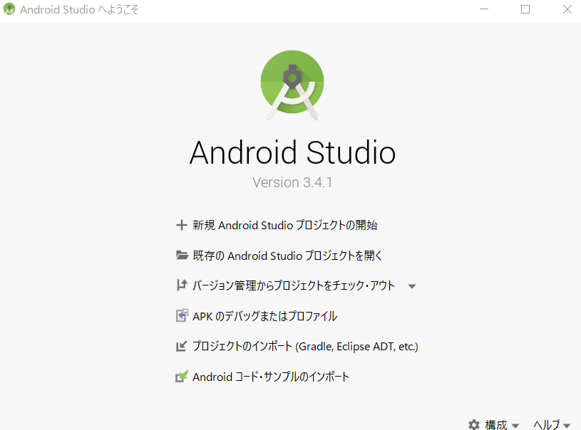
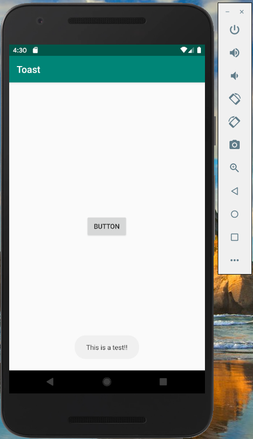
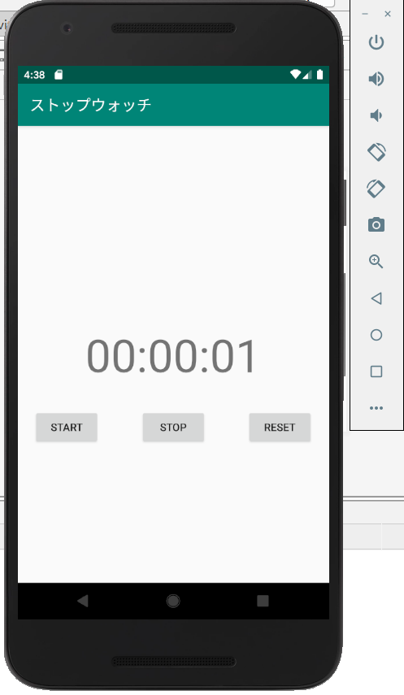

自分はまだテーマが確定していないため、興味のある研究としてアプリケーション制作の勉強を行っています。
制作を進めていく中で、アプリケーションができる範囲を把握し、テーマにつなげていきたいと考えています。
まずは、ダウンロードページから、Android studioのダウンロードをし、インストールを行いました。

端末でのプログラムを動作させるために必要なソフトウェアをひとまとめにしたパッケージのこと。
Android sutudioの初期設定の際にダウンロードが開始される。(それなりに時間がかかりました。)
アプリケーションのテストのためにシミュレーションとして用いるツール。
実機と同様に動作する。(容量がかなり大きいので注意が必要)
Pleiadesプラグインという、Javaアプリケーションを日本語化するツールを用いて、Android studioを日本語化しました。 
アプリケーションの制作において使用する言語はkotlin(コトリン)に決定しました。
Kotlinは2011年に発表された比較的新しいプログラミング言語。
2017年にAndroidアプリ開発のプログラミング言語としてGoogleによって公式採用される。
Javaよりも簡潔に入力ができる。
Android studioの操作に慣れることを目的として、まずはWebサイトを参考に
・ボタンを押すとメッセージが表示されるアプリ
・ストップウォッチアプリ
の2つを作成しました。入力にあたり、コピペは使わず理解よりも制作の流れを把握することを重視しました。
 
メッセージ表示のアプリは、コードも短くエラーは特になく制作することができたが、
ストップウォッチのアプリでは、入力ミスが原因でテスト中にエラーメッセージが表示されてしまった。
特に多かったのがスペルミスと、『I』と『l』などの似た文字によるミスであった。